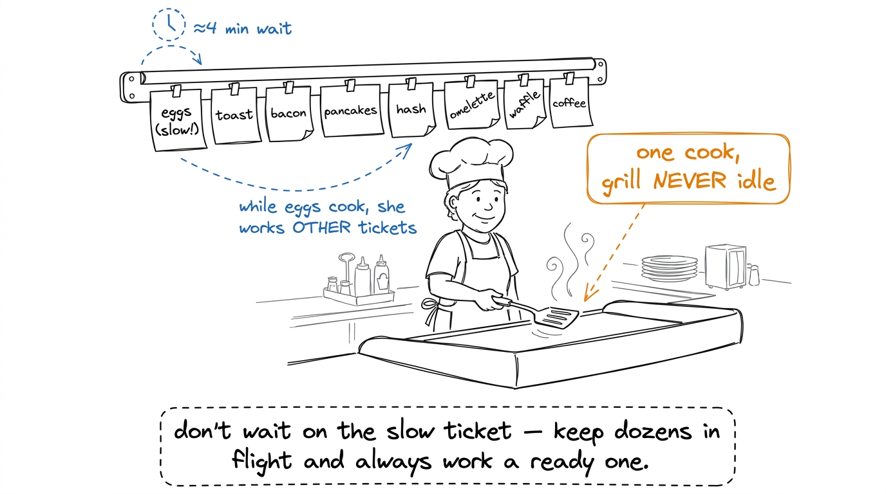
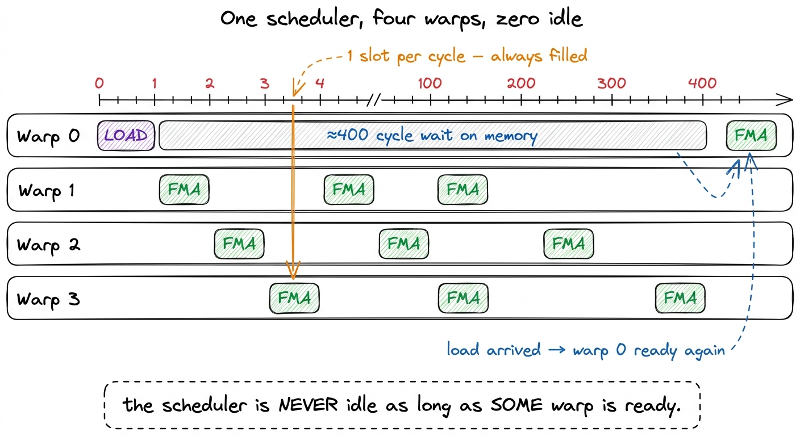
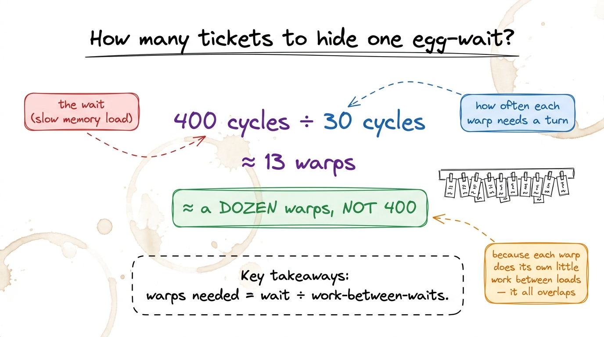
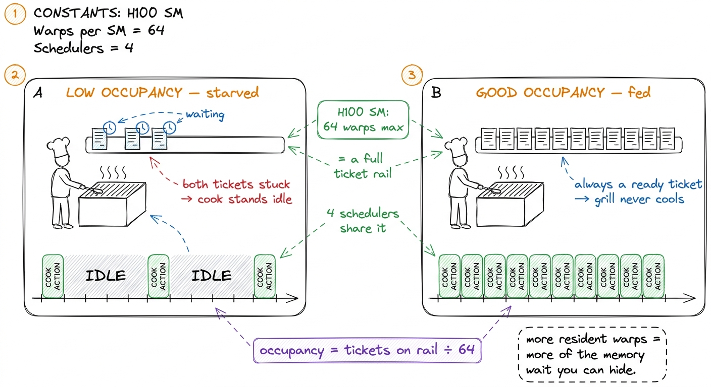
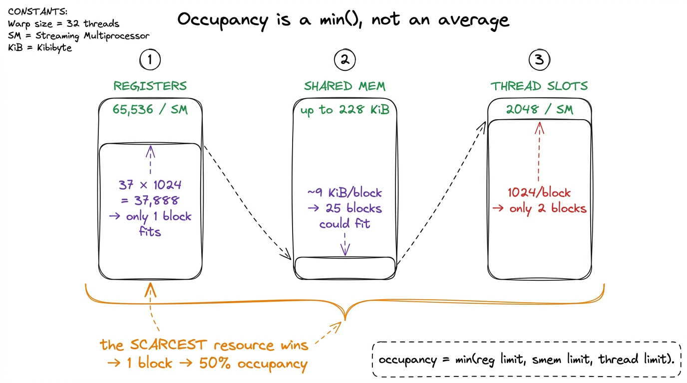
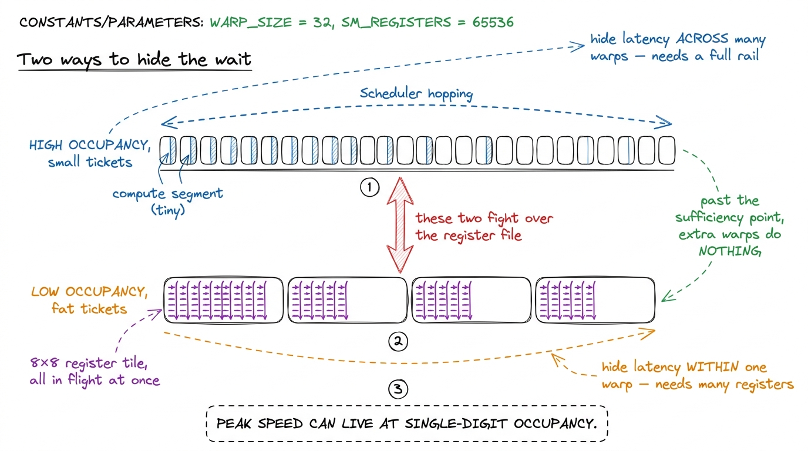

Latency hiding: the short-order cook juggling tickets
By the end of this chapter you'll be able to stand at a whiteboard and teach the single most important idea in how a GPU actually works: that memory is painfully slow, and the GPU wins anyway — not by making memory faster, but by never sitting still while it waits. You'll teach latency hiding, and the number that measures it, occupancy. No electronics needed. One kitchen metaphor, one honest number, and a picture your students will never forget.
This chapter builds directly on the cafeteria idea from the CPU-vs-GPU chapter. There we said the real bottleneck isn't doing the math — it's feeding the cooks. Now we answer the obvious next question: if feeding is so slow, how does the GPU stay fast at all? The answer is the whole soul of the machine.
The one-sentence answer
Reaching out to the GPU's main memory to fetch a number takes roughly 400 cycles. That is an eternity — in that time the chip could have done hundreds of multiply-adds. A CPU would panic and spend huge effort trying to make that wait shorter. The GPU does the opposite. It accepts the 400-cycle wait, and simply makes sure it always has other work ready to do while it waits. It never reduces the wait. It hides it.

figure rendering · The core metaphor: a short-order cook hides the slow-egg wait by jugglWhat a warp is, and what the scheduler does
To teach this you need exactly two new nouns, introduced gently.
A warp is a group of 32 threads that move together in perfect lockstep — 32 workers all doing the same instruction at the same instant. Think of a warp as one ticket on the rail: it's the unit the cook picks up and works on. It's always exactly 32, on every NVIDIA GPU ever made. That number is baked into the hardware.
The warp scheduler is the cook. Each cycle, it looks at all the warps sitting on its rail, finds one whose next instruction is ready to go (all its ingredients have arrived), and runs that one. If the warp it just ran is now stuck waiting on a slow memory load — fine. It just picks a different ready warp next cycle. There's no cost to switching. Every warp's state is already sitting in the hardware, so "switching tickets" is free — the cook doesn't clean the grill between tickets, she just looks up and grabs the next ready one.

figure rendering · The whole idea in one frame: warp 0's 400-cycle memory wait is fully cThe napkin math: how many tickets do you need?
Here's where it stops being a vibe and becomes arithmetic your students can do. Ask the question straight: if a memory load takes ~400 cycles, and the scheduler can only run one warp per cycle, how many warps do I need on the rail so the scheduler always has someone ready?
The rough answer comes from a very old, very simple idea called Little's Law: the number of jobs you need in flight equals the wait time divided by how often each job needs the counter. If the wait is ~400 cycles and each warp comes back for a turn every ~30 cycles, you need about 400 ÷ 30 ≈ 13 warps in flight to keep the cook busy all the way through the wait.

figure rendering · Little's Law on a napkin: a 400-cycle wait needs only about a dozen waOccupancy: how full is the rail?
Now name the thing. Occupancy is simply: how many warps did I manage to keep resident on the SM, compared to the maximum it can hold? It's a fraction.
On an H100, one SM (Streaming Multiprocessor — one processing unit on the chip, and it has four schedulers) can hold up to 64 warps at once. That's the maximum-length ticket rail. If your kernel manages to keep 32 warps resident, that's 32 ÷ 64 = 50% occupancy. Keep all 64 and you're at 100%.
More warps resident means more tickets on the rail means more chances the scheduler always finds a ready one — which means better latency hiding. That's the entire reason occupancy matters. It is a measure of how well you can hide the memory wait.

figure rendering · Two tickets starves the cook; a dozen keeps the grill full. That fullnWhy you don't just get 64 warps: the three limits
Here's the honest catch, and it's a great teaching beat because it turns occupancy from a mystery into a simple calculation. You almost never reach 64 warps, because three finite resources on the SM get shared out among your warps, and whichever runs out first sets your limit. It's a min(), not an average — the scarcest resource wins.
The three resources:
- Registers — the tiny ultra-fast scratch slots each thread uses to hold its live numbers. The SM has one big pool of
65536of them. If each thread demands a lot of registers, fewer threads fit, so fewer warps go resident. Greedy threads → short rail. - Shared memory — a small fast on-chip scratchpad (up to ~228 KiB per SM) that a block of threads shares. If each block grabs a big chunk, only a few blocks fit.
- Thread/block slots — hard ceilings: at most 1024 threads per block, and 2048 threads (64 warps) total per SM.
Whichever of these you exhaust first caps your occupancy. That's the one mental model to drill: occupancy = min(register limit, shared-memory limit, thread limit).
37 × 1024 = 37,888. The SM has 65,536. Two blocks would need 75,776 — too many! So only one block fits. One block is 32 warps. 32 ÷ 64 = 50% occupancy, capped by registers. The shared memory could've fit two dozen blocks; the thread ceiling allowed two; but registers permitted only one. The scarcest resource won.
figure rendering · Three gauges, one verdict. Whichever resource is scarcest for your bloThe plot twist: more occupancy isn't always better
This is the sophisticated beat that separates a mentor who read about occupancy from one who gets it. State the trap first: "Once you know occupancy hides latency, your instinct screams maximize it — cram in every warp! That instinct is wrong."
Why? Because hiding latency has a sufficiency point, not a bottomless appetite. Remember the napkin math: you needed about a dozen warps to fully cover a 400-cycle stall. Once you have that dozen, the scheduler is already never idle. Adding a thirteenth, a fortieth — buys you nothing. The wait is already hidden. There's no one left waiting to be covered.
And extra warps aren't free. The occupancy you buy by shrinking registers comes out of the registers — and registers are precious. The fastest kernels do the opposite of cramming warps: they give each thread a big pile of registers to hold a tile of results, so each thread has many independent multiply-adds in flight at once. That's a second, sneakier way to hide latency — within a single warp, by having lots of independent work queued up in it. It's like one ticket that itself has eight things cooking at once.

figure rendering · Occupancy across warps and independent work within a warp are two routThe production link
Frame the stakes so it's not a toy. Everything on the GEMM optimization ladder your students will climb is, from this angle, one long campaign to keep the warp scheduler busy during those 400-cycle memory windows. The naive kernel sits at a humiliating 1.3% of cuBLAS for exactly this reason: it fires a fresh slow memory load for nearly every number, with almost no independent work between loads, so the scheduler runs out of ready warps and the issue slot goes empty cycle after cycle. The profiler would show it pinned on a stall reason literally named "Long Scoreboard" — waiting on memory.
That's the chapter. One cook, a rail full of tickets, a 400-cycle egg-wait hidden behind other cooking — and the twist that a nearly-empty rail can be the fastest of all. If a student leaves able to say why the GPU hides latency instead of reducing it, and why occupancy is a means and not the goal, you've given them the beating heart of how a GPU works.
You can now teach
- Latency hiding as a short-order cook juggling tickets — the GPU accepts the ~400-cycle memory wait and covers it with other ready work instead of trying to make it shorter.
- The warp (32 threads, one ticket) and the warp scheduler (the cook picking a ready warp every cycle for free), with the tiny four-warp by-hand example that hides a 400-cycle stall.
- The napkin math (Little's Law): you need only about a dozen warps to hide a 400-cycle stall, not 400 — because independent work overlaps.
- Occupancy as "how full is the ticket rail" — resident warps ÷ max warps — and the
min()of three limits (registers, shared memory, thread slots) that caps it, worked by hand to 50%. - The plot twist: hiding latency has a sufficiency point, extra warps cost registers, and the fastest real kernels (cuBLAS, FlashAttention) run at single-digit occupancy on purpose.
- The production hook: the whole GEMM ladder is a campaign to keep the scheduler fed, and "Long Scoreboard" in Nsight is the to-do list that decides half the electricity bill.